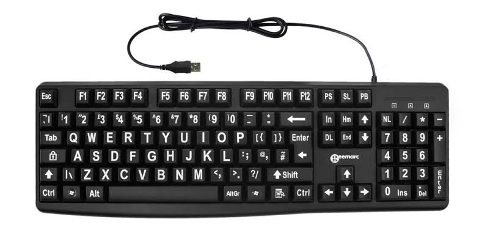
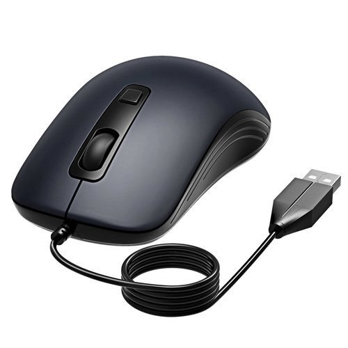
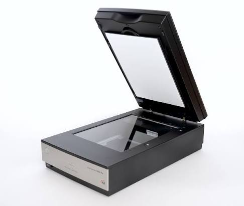
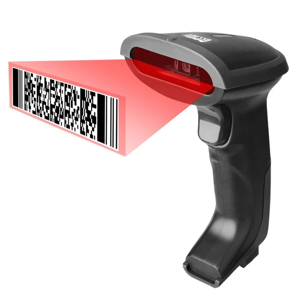
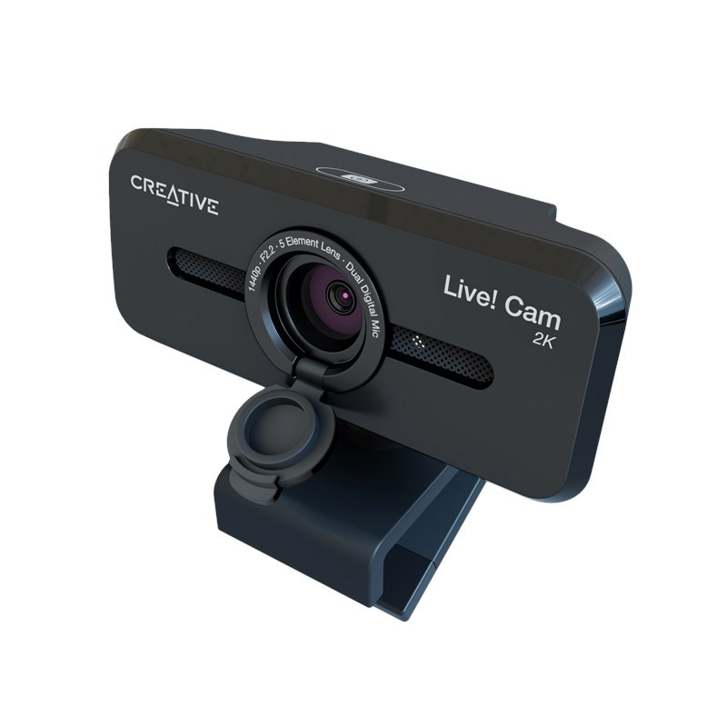
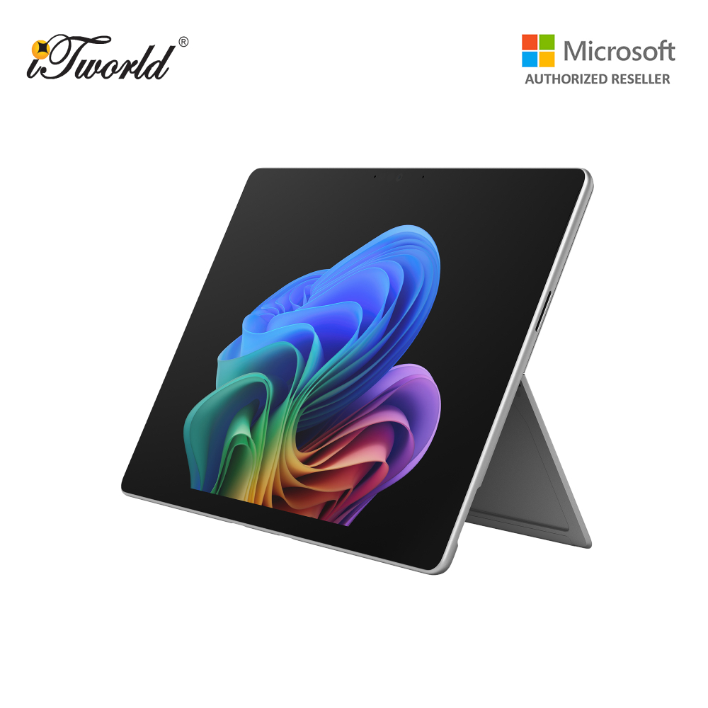

Definition
Input devices are an essential part of a computer system because
they allow users to communicate and interact with computers.
They enable users to enter data, provide instructions, and control
different functions of a computer. Without input devices, users
would have very limited ways to interact with a computer.
Features Of Input Devices
-
Keyboard
- Allows users to input text and commands.
- Contains keys for letters, numbers, and characters.
- Supports different layouts such as QWERTY and AZERTY.
- Connects via USB, wireless, or is integrated into laptops.

-
Mouse
- Used to point and control the cursor on a computer screen.
- Includes buttons and a scroll wheel.
- Used to select, drag, and open files or programs.
- Works on a flat surface for movement.

-
Scanner
- Captures images or text from physical documents.
- Converts paper-based data into digital format.
- Allows scanned documents to be stored digitally.
- Scanned images can be edited before printing.

-
Barcode Reader
- Reads bar-coded data.
- Extracts information from products or labels.
- Available as handheld scanners or integrated systems.
- Uses light to decode barcode patterns.

-
Web Camera
- Records video images of the scene in front of it.
- Can be connected through USB or built into laptops.
- Supports video recording and live streaming.
- Commonly known as a webcam.

-
Touchscreen
- Allows users to interact with a display by touching it.
- Supports selecting, typing, and drawing.
- Uses virtual keyboards and gestures.
- Commonly found in smartphones, tablets, and ATMs.

What Are the Benefits of Input Devices?
-
Accessibility
-
Input devices make computers usable for everyone.
Specialized tools such as voice recognition systems
and eye-tracking devices help people interact with
digital technology.
-
Enhanced Productivity
-
Devices such as keyboards and mice allow fast data
entry and efficient navigation.
-
Specialized Control
-
Certain input devices provide precise control for
specific tasks, such as graphic design, gaming,
and music production.
-
Seamless Interaction
-
Input devices allow users to browse the internet,
operate software, and communicate easily.
What Are the Challenges Faced?
-
Accuracy Problems
-
Input may sometimes be incorrect because of human
error or device limitations.
-
Physical Damage
-
Devices can be damaged through drops, spills,
or prolonged use.
-
Maintenance Requirements
-
Devices may require cleaning, repairs, battery
replacement, or software updates.
Input Devices for Work Applications
| Input Device |
Work Application |
Example |
| Keyboard |
Used to enter text, numbers, and commands. |
Writing reports, emails, and entering data. |
| Mouse |
Used to navigate and control software. |
Designing documents, selecting files, and using business software. |
| Scanner |
Used to digitise physical documents. |
Scanning invoices, contracts, and forms. |
| Barcode Reader |
Used to identify products and retrieve information. |
Supermarket checkout and inventory management. |
| Webcam |
Used for video communication. |
Online meetings, interviews, and remote work. |
| Touchscreen |
Used for direct interaction with applications. |
Self-service kiosks, POS systems, and customer check-in. |
| Microphone |
Used to capture voice and audio. |
Online meetings, voice recording, and customer service. |
| Biometric Scanner |
Used to identify employees using biological characteristics. |
Fingerprint attendance and workplace security. |